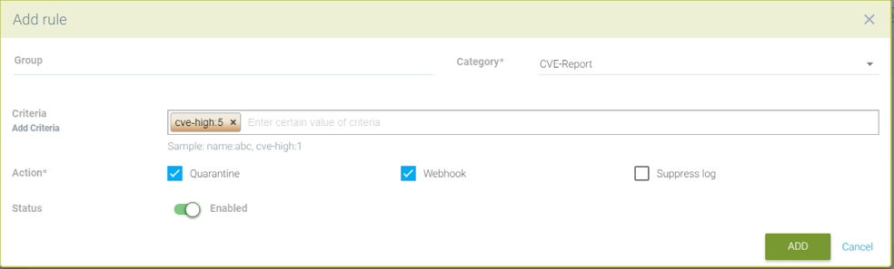

Reglas de Respuesta
Directiva: Reglas de Respuesta
Las Reglas de Respuesta proporcionan un motor de reglas flexible y personalizable para automatizar respuestas a eventos de seguridad importantes. Los desencadenantes pueden incluir Eventos de Seguridad, resultados de escaneos de vulnerabilidades, benchmarks CIS, eventos de Control de Admisión y eventos generales. Las acciones incluyen cuarentena de contenedores, webhooks y supresión de alertas.

Creando una nueva Regla de Respuesta utilizando lo siguiente:
-
Grupos. Una regla se aplicará a un Grupo. Por favor, consulte la sección Política de Seguridad en Tiempo de Ejecución → Grupos para más detalles sobre Grupos y cómo crear uno nuevo si es necesario.
-
Categoría. Este es el tipo de evento, como Evento de Seguridad o resultado de escaneo de vulnerabilidades CVE.
-
Criterios. Especifique uno o más criterios. Cada Categoría tendrá diferentes criterios que se pueden aplicar. Por ejemplo, por el nombre del evento, severidad o número mínimo de CVEs altos.
-
Acción. Seleccione una o más acciones. La cuarentena bloqueará todo el tráfico de red dentro/fuera de un contenedor. El webhook requiere que se defina un endpoint de webhook en → Configuración. Suprimir el registro evitará que este evento se registre en Notificaciones.

|
Todas las Reglas de Respuesta se evalúan para determinar si se cumplen tanto la condición como los criterios. Si hay múltiples coincidencias de reglas, se ejecutarán todas las acciones. Esto es diferente al comportamiento de las Reglas de Red, que se evalúan de arriba a abajo y solo se ejecutará la primera regla que coincida. |
Eventos y acciones adicionales seguirán siendo añadidos por SUSE® Security en futuras versiones.
Configuración Detallada para las Reglas de Respuesta
Las Reglas de Respuesta permiten respuestas automatizadas como cuarentena, webhook y suprimir registro basadas en ciertos eventos de seguridad. Actualmente, los eventos que se pueden definir en la regla de respuesta incluyen registros de eventos, registros de eventos de seguridad y informes de CVE (escaneo de vulnerabilidades) y benchmarks CIS. Las reglas de respuesta se aplican en todos los modos: Descubrir, Monitorizar y Proteger y el comportamiento es el mismo para los 3 modos.
Se aplicarán acciones de múltiples reglas si un evento coincide con múltiples reglas. Cada regla puede tener múltiples acciones y múltiples criterios de coincidencia. Todas las acciones definidas se aplicarán a los contenedores cuando los eventos coincidan con los criterios de la regla de respuesta. En el caso de que haya una coincidencia para eventos de Host (no contenedor), actualmente se admiten las acciones webhook y suprimir registro.
Hay 6 reglas de respuesta predeterminadas incluidas con SUSE® Security que están configuradas en el estado ‘disabled,’, una para cada categoría. Los usuarios pueden modificar una regla predeterminada para que coincida con sus requisitos o crear nuevas. Asegúrate de habilitar cualquier regla que deba aplicarse.

Usando Múltiples Criterios en una Sola Regla
La lógica de coincidencia para múltiples criterios en una regla de respuesta es:
-
Para diferentes tipos de criterios (por ejemplo, nombre:Network.Violation, nombre:Process.Profile.Violation) dentro de una única regla, aplicar 'y'
Acciones
-
El contenedor — está en cuarentena. Ten en cuenta que Cuarentena significa que todo el tráfico de red está bloqueado. El contenedor permanecerá y seguirá funcionando, solo que sin ninguna conexión de red. Kubernetes no iniciará un contenedor para reemplazar un contenedor en cuarentena, ya que el servidor API aún puede acceder al contenedor.
-
Webhook - se ha generado un registro de webhook
-
suprimir-registro — el registro está suprimido - tanto el registro de syslog como el de webhook
|
Creando una regla de respuesta para registros de eventos de seguridad
-
Haz clic en "insertar en la parte superior" para insertar la regla en la parte superior
-
Elige un nombre de grupo de servicios si la regla necesita aplicarse a un grupo de servicios particular
-
Elige la categoría como evento de seguridad
-
Añade criterios para que el registro de eventos se incluya como criterios de coincidencia
-
Selecciona acciones que se aplicarán: Cuarentena, Webhook o suprimir registro
-
Estado habilitado
-
Los niveles de registro o nombres de procesos pueden utilizarse como otros criterios de coincidencia
Regla de muestra para poner en cuarentena el contenedor y enviar un webhook cuando se actualice un paquete en el contenedor nv.alpinepython.default.


Creando una regla de respuesta para los registros de eventos
-
Haz clic en "insertar en la parte superior" para insertar la regla en la parte superior
-
Elige un nombre de grupo de servicios si la regla necesita aplicarse a un grupo de servicios particular
-
Elige la categoría del evento
-
Añade el nombre del registro de eventos que se incluirá como criterio de coincidencia
-
Selecciona las acciones que se aplicarán - Cuarentena, Webhook o suprimir registro
-
Estado habilitado
-
El nivel de registro puede utilizarse como otro criterio de coincidencia


Creando una regla de respuesta para la categoría cve-report (nivel de registro y nombre del informe como criterios de coincidencia)
-
Haz clic en "insertar en la parte superior" para insertar la regla en la parte superior
-
Elige un nombre de grupo de servicios si la regla necesita aplicarse a un grupo de servicios particular
-
Elige la categoría CVE-Report
-
Añade el nivel de registro como criterio de coincidencia o tipo de cve-report
-
Selecciona las acciones que se aplicarán: Cuarentena, Webhook o suprimir registro (la cuarentena no es aplicable para el escaneo de registro)
-
Estado habilitado
Tipos de informes CVE de muestra que se pueden elegir para la regla de respuesta de la categoría CVE-Report

Poner en cuarentena el contenedor y enviar un webhook cuando los resultados del escaneo de vulnerabilidades contengan más de 5 vulnerabilidades CVE de alto nivel para ese contenedor


Creando regla de respuesta para los benchmarks CIS (nivel de registro y número de benchmark como criterios de coincidencia)
-
Haz clic en "insertar en la parte superior" para insertar la regla en la parte superior
-
Elige el nombre del grupo de servicios si la regla necesita aplicarse a un grupo de servicios particular
-
Elige la categoría Benchmark
-
Añade el nivel de registro como criterio de coincidencia o número de benchmark, por ejemplo. “5.12” Asegúrate de que el sistema de archivos raíz del contenedor esté montado como solo lectura
-
Selecciona las acciones a aplicar: Cuarentena, Webhook y suprimir registro (la cuarentena no es aplicable al benchmark de Host Docker y Kubernetes)
-
Estado habilitado

Descuarentenar un contenedor eliminando la regla de respuesta.
-
Puede que desees descuarentenar un contenedor si ha sido puesto en cuarentena por una regla de respuesta
-
Elimina la regla de respuesta que causó que el contenedor fuera puesto en cuarentena, la cual se puede encontrar en el registro de eventos
-
Selecciona la opción de descuarentenar para descuarentenar el contenedor después de eliminar la regla
Visualizando el id de la regla responsable de la cuarentena del contenedor (en Notificaciones → Eventos)

Ventana emergente de opción de descuarentenar cuando se elimina la regla de respuesta apropiada
Marca la casilla para descuarentenar cualquier contenedor que haya sido puesto en cuarentena por esta regla

Lista completa de criterios categorizados que se pueden configurar para las Reglas de Respuesta
Ten en cuenta que algunos criterios requieren un valor (por ejemplo, cve-high:1, nombre:D.5.4, nivel:crítico) delimitado por dos puntos, mientras que otros están preestablecidos y aparecerán en el menú desplegable cuando empieces a escribir un criterio.
Eventos
Container.Start
Container.Stop
Container.Remove
Container.Secured
Container.Unsecured
Enforcer.Start
Enforcer.Join
Enforcer.Stop
Enforcer.Disconnect
Enforcer.Connect
Enforcer.Kicked
Controller.Start
Controller.Join
Controller.Leave
Controller.Stop
Controller.Disconnect
Controller.Connect
Controller.Lead.Lost
Controller.Lead.Elected
User.Login
User.Logout
User.Timeout
User.Login.Failed
User.Login.Blocked
User.Login.Unblocked
User.Password.Reset
User.Resource.Access.Denied
RESTful.Write
RESTful.Read
Scanner.Join
Scanner.Update
Scanner.Leave
Scan.Failed
Scan.Succeeded
Docker.CIS.Benchmark.Failed
Kubenetes.CIS.Benchmark.Failed
License.Update
License.Expire
License.Remove
License.EnforcerLimitReached
Admission.Control.Configured // for admission control
Admission.Control.ConfigFailed // for admission control
ConfigMap.Load // for initial Config
ConfigMap.Failed // for initial Config failure
Crd.Import // for crd Config import
Crd.Remove // for crd Config remove due to k8s miss
Crd.Error // for remove error crd
Federation.Promote // for multi-clusters
Federation.Demote // for multi-clusters
Federation.Join // for joint cluster in multi-clusters
Federation.Leave // for multi-clusters
Federation.Kick // for multi-clusters
Federation.Policy.Sync // for multi-clusters
Configuration.Import
Configuration.Export
Configuration.Import.Failed
Configuration.Export.Failed
Cloud.Scan.Normal // for cloud scan nomal ret
Cloud.Scan.Alert // for cloud scan ret with alert
Cloud.Scan.Fail // for cloud scan fail
Group.Auto.Remove
Agent.Memory.Pressure
Controller.Memory.Pressure
Kubenetes.{product-name}.RBAC
Group.Auto.Promote
User.Password.AlertIncidentes (Evento de Seguridad)
Host.Privilege.Escalation
Container.Privilege.Escalation
Host.Suspicious.Process
Container.Suspicious.Process
Container.Quarantined
Container.Unquarantined
Host.FileAccess.Violation
Container.FileAccess.Violation
Host.Package.Updated
Container.Package.Updated
Host.Tunnel.Detected
Container.Tunnel.Detected
Process.Profile.Violation // container
Host.Process.Violation // hostAmenazas (Evento de Seguridad)
TCP.SYN.Flood
ICMP.Flood
Source.IP.Session.Limit
Invalid.Packet.Format
IP.Fragment.Teardrop
TCP.SYN.With.Data
TCP.Split.Handshake
TCP.No.Client.Data
TCP.Small.Window
TCP.SACK.DDoS.With.Small.MSS
Ping.Death
DNS.Loop.Pointer
SSH.Version.1
SSL.Heartbleed
SSL.Cipher.Overflow
SSL.Version.2or3
SSL.TLS1.0or1.1
HTTP.Negative.Body.Length
HTTP.Request.Smuggling
HTTP.Request.Slowloris
DNS.Stack.Overflow
MySQL.Access.Deny
DNS.Zone.Transfer
ICMP.Tunneling
DNS.Type.Null
SQL.Injection
Apache.Struts.Remote.Code.Execution
DNS.Tunneling
K8S.externalIPs.MitMCumplimiento
Compliance.Container.Violation
Compliance.ContainerFile.Violation
Compliance.Host.Violation
Compliance.Image.Violation
Compliance.ContainerCustomCheck.Violation
Compliance.HostCustomCheck.Violation
Compliance.Test.Name // D.[1-5].*CVE-Report
ContainerScanReport
HostScanReport
RegistryScanReport
PlatformScanReport
cve-name
cve-high
cve-medium
cve-high-with-fix // cve-high-with-fix:N (fixed high vul.>N) cve-high-with-fix:N/D (fixed high vul.>N and reported more than D days ago)